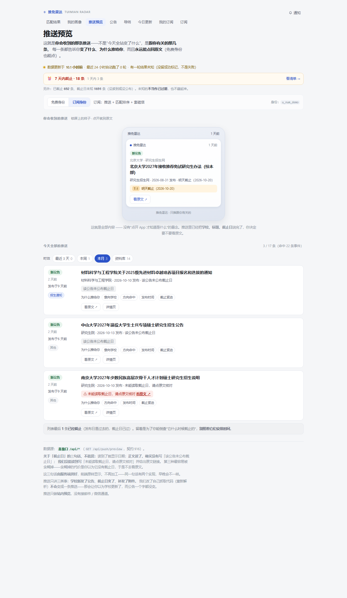
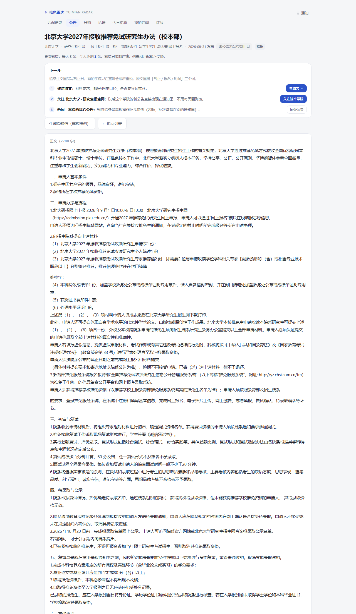
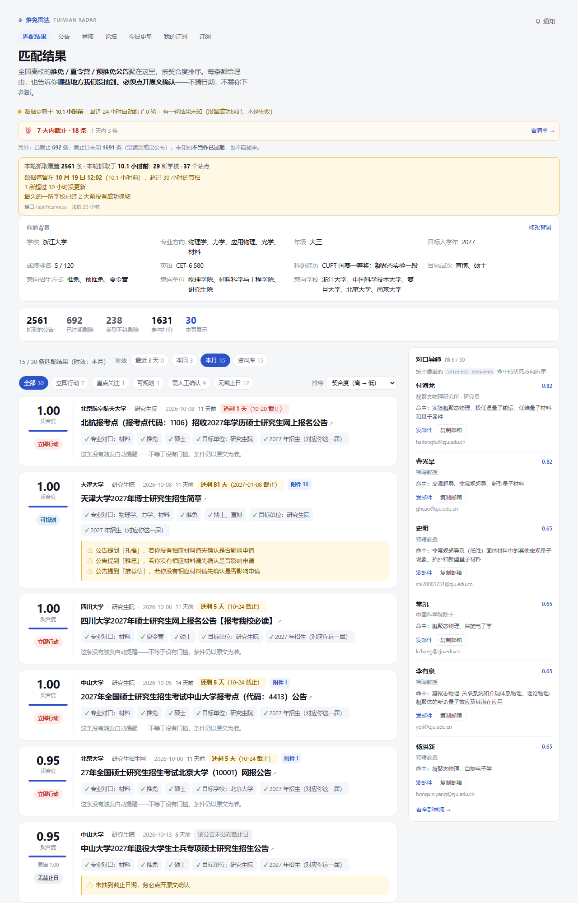
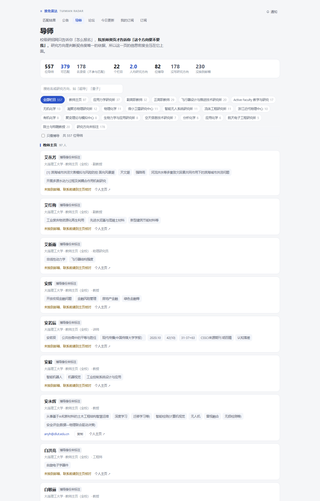
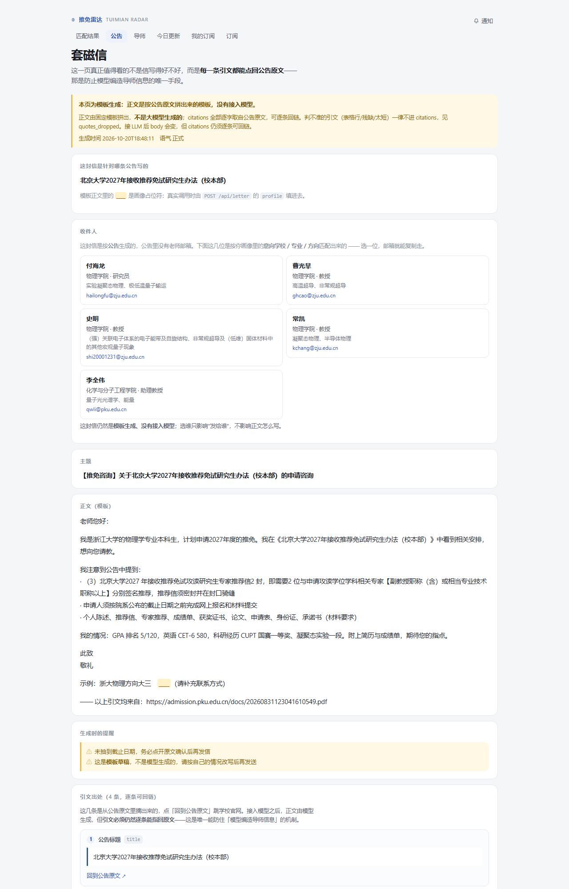
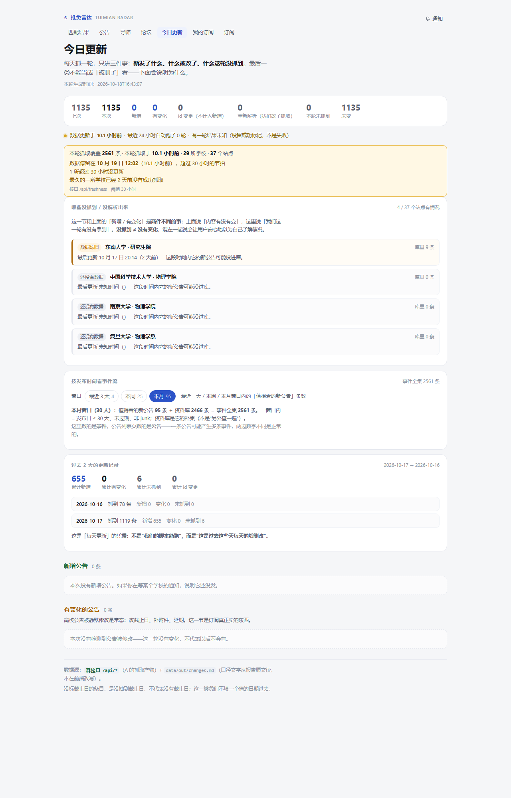

把 29 所高校官网的推免公告，变成「今天该你办的几件事」。
每条都能点回原文。
不是保研指导平台，
是说得清自己哪里不知道的信息监控工具。
用 ← → 或下方按钮切换 · 每 8 秒自动播放
20+ 个研究生院和院系官网，暑期夏令营、预推免、推免系统三个窗口，截止日藏在附件里。
手动刷 29 所学校，一天不刷就可能错过报名。
微信群靠转发，公告改了、补了附件也没人知道。
二手转载点不回原文，没法核对。
漏一条公告，代价是一整年的机会。

顶部先说数据有多新，再说 7 天内截止几条；每张卡写清「为什么推给你」和「还剩几天」。

三态分开写：「该公告未公布截止日」和「未能读取，请点原文核对」不是一回事。页面永远保留原文入口。

学校 / 专业 / 方向 / 新鲜度四维排序；EMBA、报考点、目录简章不占首屏。右侧按研究方向匹配导师。

557 位导师，379 位有研究方向，327 位有邮箱。邮箱从官网抓取，发信前请自己在主页核对。

明确标注「模板生成、没有接入模型」。引文能点回原文，这是防止模型编造导师信息的唯一机制。

「没抓到」单独列出来，不和「没有变化」混在一起。哪所学校失败、原因是什么，都公开。
每天前 10 条推送；公告列表和原文链接不设限。
全部推送、匹配排序、套磁信。
院系招生宣传、机构数据接口（合规前提下）。
当前支付为演示（开通码），未接真实通道；不把模拟支付说成收入。
契约形状、三态不变量、数据健康、公网只读，全绿才算交付。
北大 / 川大 / 清华物理三校外部对照，从 74.1% 降下来；其余 26 所是已知边界。
不要求你相信结论，只要求你点一下。
读不到就说读不到，没有就说没有，判据错了就把过程写下来。
今天该看的公告，一条不漏；每条都能点回原文。
说得清自己哪里不知道。
GitHub · 魔搭创空间演示 · 本地一键运行